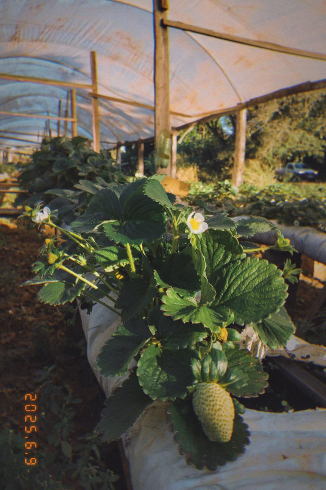
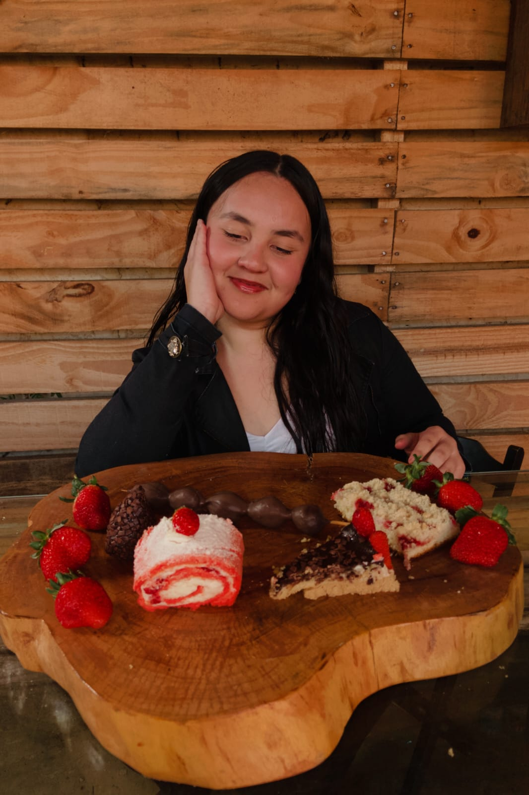
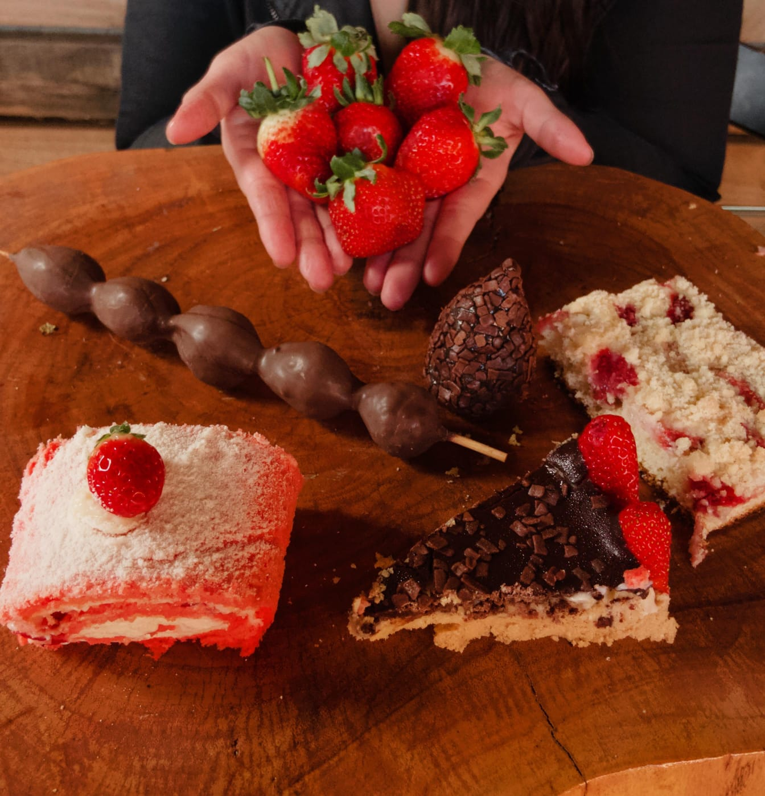
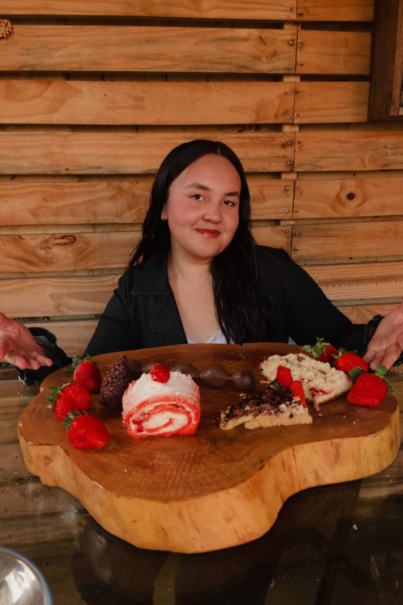

Galeria

Morango

Morango no cacho

Estufa

Nossas Receitas

Nossa Produção


hoje, tivemos a honra de conversar com o produtor rural e secretário da agricultura do município de Rosário do Ivaí, Ozandes Ribeiro Correia. ele nos contou que tem mais de 4 anos de atuação do ramo agrícola, o senhor Ozandes nos contou que sua trajetória, começou de bandeira inesperada durante o período da pandemia. sua produção é focada do cultivo de morangos totalmente naturais, sei a utilização de agrotóxicos utilizados mudas da variedades Sandreias, originárias do Chile muda selecionadas. além disso ressaltou a importância do investimento do setor agrícola não apenas pela renda mas também pela possibilidade de oferecer alimentos saudáveis e sem agrotóxicos para a população em uma de suas palavras em nossa entrevista, ele disse a seguinte frase "tenho orgulho de representar tantos produtores rurais, tanto os que cultivam o morango quanto aqueles dedicados a outras atividades do campo. "essa conversa que tivemos reforça o valor do trabalho do produtor rural e a importância de práticas agrícolas responsáveis parabenizamos o senhor Ozandes por sua dedicação e sua disponibilidade para nós atendermos. Maria Isabely Colégio Estadual Rio Branco - Ensino Fundamental e Médio